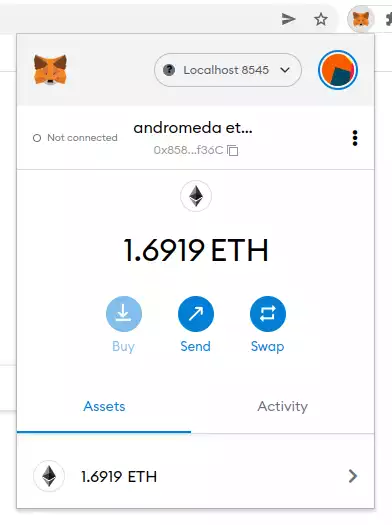
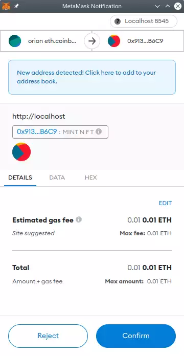
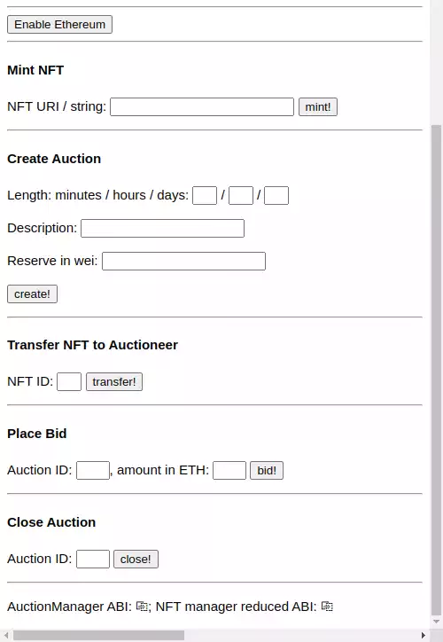

Go up to the CCC HW page (md) | view tabbed version
Overview
You are going to create a web interface for the Auctioneer contract you created in the dApp Auction (md) assignment. This web interface will allow for the creation of NFTs and the ability to start and stop auctions, as well as bidding on running auctions. The web page you create will reside on the departmental servers, just like with the DAO & web3 (md) assignment. This assignment will allow writing to the blockchain as well as reading from it.
Writing this homework will require completion of the following assignments:
We are going to use your Auctioneer contract, from the dApp Auction (md) assignment. You will also need your NFTmanager contract, from the Ethereum Tokens (md) assignment, as well. If you did not get either of those two contracts (Auctioneer or NFTManager) working, then contact the course staff, and we can deploy them for you to use. Otherwise you can either re-deploy your Auctioneer contract to the blockchain, or use the one you deployed for the dApp Auction (md) assignment. Save the contract address of your Auctioneer, as it will be needed when you submit your assignment.
In addition to your source code, you will submit an edited version of metamask.py (src).
Changelog
Any changes to this page will be put here for easy reference. Typo fixes and minor clarifications are not listed here. So far there aren’t any significant changes to report.

This assignment uses the MetaMask extension to Google Chrome. Unfortunately, it does not run in any other browser; meaning you can’t use Firefox, Safari, Edge, or Internet Explorer. You have to use Chrome for this assignment.
Here are the MetaMask setup steps:
- If you haven’t already, install Google Chrome
- Install the MetaMask extension; you will see a pop-up like the image to the right
- Note that on some systems it is presented as a web page rather than a pop-up, but the content of the web page is the same as the pop-up shown to the right
- When MetaMask first installs, it will ask you if you already have a secret recovery phrase or to create a wallet – you want to create a wallet
- It will ask you to enter a password – remember it, as you will need it each time you start up MetaMask
- Click on the MetaMask icon (
 ) next to the browser’s address box. You will see something similar to the image to the right.
) next to the browser’s address box. You will see something similar to the image to the right.
- Click the network drop-down box – in the image to the right it says “localhost:8545”, but in your version it will likely say “Ethereum Mainnet”.
- In that drop-down list, select “add network”; this will bring up a web page
- In the Settings column on the far left, click on Advanced
- About half-way down there is a toggle setting to “show test networks” – make sure that is togged on
- In the settings column on the far left, click on the Networks option, then click on the “localhost:8545” network
- Change the chain ID to the (base-10) value for our blockchain; that value can be found on the Canvas landing page
- Change the explorer URL to the URL of the course explorer (on the Canvas landing page)
- Then click save
- Back in the network selection box, you should now be able to select “localhost:8545” as your network – this is going to connect to the geth node that we will be starting in a moment
- Obtain your decrypted private key for the account that you want to use. This was done in Part 4 of the Private Ethereum Blockchain (md) assignment, and you also used that in the Arbitrage trading (md) assignment. It will be a hex value of the form
0123456789abcdef0123456789abcdef0123456789abcdef0123456789abcdef
- Start your geth node. Among any other flags that you are using, you need to supply the
--http flag when you start geth
- This causes geth to start listening to port 8545 on your computer (aka localhost), which is how MetaMask will connect
- Does it not connect? Make sure you are running your geth node with the
--http flag.
- Configure your account in MetaMask. To do so, again click on the MetaMask icon () next to the browser’s address box. You will again see something similar to the image to the right. Sometimes there is a noticeable delay when clicking that icon before the pop-up windows appears.
- Click on the circular icon in the upper-right of the MetaMask window – in the image to the right it looks like: , but will likely look different in yours
- Click on “import account” (NOT create account!)
- Paste in your decrypted private key and click on ‘import’
- You should now see your balance in the account pop-up window
- You will likely want to rename the account – MetaMask just calls them “account 1”, “account 2”, etc., and makes it hard to delete “account 1”. To rename your account, in the MetaMask window in the image to the right, click on the vertical ellipsis (⋮) to the right of the account name, then click on “account details”, then click on the pencil/edit icon to the right of the account name.
At this point, the MetaMask extension should be connected to your account on the private Ethereum blockchain – you can tell if this is the case because it will report your balance in the MetaMask window. Note that if you restart Chrome, you may have to re-enter your MetaMask password. Also, it will say “Not connected” to the left of the account name – that’s fine for now, since we have not yet created a web page for it to connect to; that “Not connected” is that it is not connected to the current web page, it is not indicating a the presence (or lack thereof) of a connection to the blockchain.
If you are having problems with this setup, you can also have Metamask create a new account for you, and the fund it with the course faucet.
Your URL
This part is similar to what was in the DAO & web3 assignment (md) assignment – you are going to add a _xxxxxxxx suffix on your metamask.html file name. so your filename will be of the form metamask_xxxxxxxx.html. HOWEVER, you also have to run touch ~/public_html/index.html (or similar) on the departmental server – see the “Preventing directory viewing” section. below.
You can determine your URL suffix as you did in the DAO & web3 assignment (md) assignment. Thus, your file name on the departmental server is going to be of the form metamask_xxxxxxxx.html.
Preventing directory viewing
(If you did this in the DAO&web3 assignment, no need to repeat it here).
If you go to your home page on the departmental viewer, you can see all the files in the directory listing that shows up. To prevent this, we are going to create a default (and empty) index.html file. On the departmetnal server, you can just run touch ~/public_html/index.html.
NOTE: If you already have a web page present, or otherwise have prevented (intentional or not) directory viewing, then no further steps are needed.
Web3.js
The intent is for you to start with the web site that was provided to you in the dApp Auction (md) assignment, and add some features. The URL of that web site is on the Canvas landing page – you can just save that as a new HTML file, which you will want to name metamask_xxxxxxxx.html. Note: you have to view that page with an Auctioneer contract address else most of the relevant Javascript code will not be shown. The link to that page with an address is also on the Canvas landing page. You are going to create a few web forms, each of which will call a different Javascript function. Those forms – and the paired Javascript functions – will perform the various actions that we need to perform on the Auctioneer: minting new NFTs, starting a new auction, closing an auction, and bidding on an auction.
The DAO & web3 assignment (md) goes over the basics of HTML web pages and Javascript functions.
We want to ensure that any viewer of this web page has MetaMask properly installed. The following code will do that:
<script>
if ( window.ethereum === undefined )
window.alert("Please install MetaMask; this page will not work properly without that extension installed");
</script>
This is useful as it will give a warning to those using other browsers, or those on Chrome without the MetaMask extension installed, that the site won’t work properly. In a fully developed web site, we would display the rest of the page differently if it is run without MetaMask. For this assignment, you should just display that warning. It’s fine for this assignment if the rest of your page does not display correctly without MetaMask installed. You can put this code right after the <body> opening tag.
Beyond what is shown in the code above, you do not need to handle the situation where a user tries to use this page when not using Chrome with MetaMask installed.
The first thing a user has to do is enable the MetaMask extension to use the site; this is usually phrased as “connecting to MetaMask”. To do this, we add the following code to our HTML file (adapted from here).
<script>
function connectToMetaMask() {
ethereum.request({ method: 'eth_requestAccounts' });
}
</script>
<button onClick='connectToMetaMask()'>Enable Ethereum</button>
Yes, there are better ways to do this in Javascript, such as adding event listeners. No, we don’t need those for this assignment – although you are welcome to do so if you are familiar with Javascript.
This connection will persist through a page reload, and – on some operating systems at least – will persist thorough a browser restart. You can test if this works by connecting and then disconnecting. To disconnect, click on the MetaMask icon () next to the browser’s address box, then click on the “Connected” button (to the left of the account name), and the vertical ellipsis (⋮) that appears will allow you to disconnect.
The expectation is that any user will first click on that button to connect to MetaMask. You do not need to handle the situation when a user tries to use the rest of the page without first connecting via this button.
Web3.js library
We could interact with MetaMask directly, but using web3.js, which we are familiar with, is going to make life much easier – it will do all the encoding of parameters into calls, etc.
Previously, we defined the web3 variable as such (The value for URL is on the Canvas landing page):
let web3 = new Web3('URL');
We are now going to add a line:
let web3 = new Web3('URL');
let web3mm = new Web3(window.ethereum);
You will notice that we are creating TWO connections to the blockchain. The first connection is through the normal URL as was done in the DAO & web3 (md) assignment and as is done in the auctions.php page that you are basing your code off of; that URL is on the Canvas landing page. This first connection is read-only. The second connection is through MetaMask, which injects the window.ethereum object, and Web3.js can just connect via that. We will be able to send transactions through the second connection.
The reason we are doing two connections is because the first one supports subscriptions, which is what allows the table to be updated upon an event emission – you did that in the DAO & web3 (md) assignment, and the auctions.php does that as well. However, that first connection does not allow sending transactions to the blockchain. The second connection, which is through MetaMask, does not support subscriptions (so no automatic updating of the tables), but does allow sending transactions to the blockchain.
As both are wrapped in the Web3 constructor, you interact with them in the same way.
As a general rule, any one Javascript function should use only one of those connections, as they may be slightly out of sync with each other (the MetaMask one has about a 5 second delay, for example). If you are sending transactions to the blockchain, you have to use the web3mm connection. Otherwise, use the web3 connection. As you will only be writing five functions that send transactions to the blockchain, only those five will use web3mm.
Likewise, we need an auction contract interface that connects through the web3mm connection. Currently there is this line of code in the HTML file:
auctionContract = new web3.eth.Contract(auctioneerAbi,auctioneerContractAddress);
We are going to add a line:
auctionContractmm = new web3mm.eth.Contract(auctioneerAbi,auctioneerContractAddress);
If a function is using the web3mm connection, then it should use the auctionContractmm contract interface.
You will have to do something similar with your connection the NFTManager.
HTML and JS
Below is an example HTML form and associated Javascript function. This will call the mintWithURI() function on your NFTManager smart contract.
<h4>Mint NFT</h4>
<script>
const mintNFT = async() => {
try {
const eth_coinbase = web3mm.utils.toChecksumAddress(await web3mm.eth.getCoinbase());
var str = document.getElementById('nftstring').value;
const txninfo = await nftContractmm.methods.mintWithURI(str).send({from:eth_coinbase, gas:1000000, gasPrice:1000000000});
showReturnIntegerValue(web3mm,txninfo['transactionHash'],"NFT ID");
} catch (error) {
console.error("Error: "+error);
}
}
</script>
<form onsubmit='return false;'>
<p>NFT URI / string: <input type='text' id='nftstring' style="width:200px">
<input type='button' value="mint" onClick="mintNFT();"></p>
</form>
This calls a showReturnIntegerValue() function, which is provided below.

There is a lot going on here, and you will need to understand it in order to be able to adapt it for the other function calls that you need to make.
- Notice that we are using the
web3mm connection, since we are connecting through MetaMask.
- All addresses need to be in checksummed form, else you will get errors. That is what
web3mm.utils.toChecksumAddress() does
- We are also using the
nftContractmm contract, which would have had to be created through the web3mm connection.
- We define the
mintNFT() function which is an async function; async functions were described in the DAO & web3 (md) assignment.
- One way to deal with
async functions is to give it a code block to execute when the function returns. The other is to have it to wait until the async function returns. We chose the latter here by putting the await keyword in front of the various async calls in that function. Note that await can ONLY be called in an async function (and in one other situation that does not apply to us here); this is a Javascript restriction. Also note that any variable that you await for a value for must be a const.
- The other way to deal with
async functions is to provide it a code block to execute via .then() – an example of that is given below (in the “Hints” section)
- To get the user’s coinbase account address, we call
await web3mm.eth.getCoinbase(); – that’s the account they are logged into via MetaMask.
- The
nftContractmm.methods.mintWithURI(str) line is where the transaction itself occurs. You will notice that this uses send(), not sendTransaction(). So this is similar to the geth commands we know (md), but just different enough to drive us up the wall learning a slightly different syntax for how to call the transaction.
- For this assignment, keep the gas at 1 million and the gas price at 1 gwei (which is 109 wei); yes, this is a lot of gas, but since our ETH is free, we aren’t worried about it.
- Looking at the form, we see that the text box has an ID of
nftstring (3rd line from the bottom). The document.getElementById('nftstring').value gets the value currently entered into the text box.
- After
awaiting for the various function calls, we then display the results via an alert box: showReturnIntegerValue(web3mm,txninfo['transactionHash'],"NFT ID");. This function is described below, but it will get the integer return value of a transaction and display that in an alert box. A full fledged website would have a better UI for displaying this, but an alert box is sufficient for us. We assume the user will remember his/her NFT ID, and we do not have to handle the case when they forget it.
- We put everything into a try-catch clause, as this will allow printing out of the error if one occurs. You can view that in the Javascript developer console.
- In the form, you will notice that the form tag has the value
onsubmit='return false;'. We want this entire web page to do all the work, and we are not submitting a form (which will reload the page). This clause prevents the pressing of the Enter key triggering a form submission (and thus page reload).
- Also in the form, the button has
onClick="mintNFT();" which will launch the mintNFT() Javascript function when it is clicked.
- If you are familiar with HTML, you will notice that there is no
submit button, as we do not want the form to be submitted (and cause a reload). If you are not familiar with HTML, and don’t know what that means, you can ignore this bullet point.
When this Javascript function is called, MetaMask will pop up a window, such as what is shown to the right, to verify that you really want to send that transaction. This happens on the auctionContract.methods.mintNFT(str) line, since that’s the only line that is actually sending a transaction; the other lines are doing read-only calls. You will have to click ‘confirm’ for the transaction to be sent to the blockchain.
Once it is confirmed, it will take a second or so for the transaction to reach the P2P network, and then a second or two for it to be auto-mined into the blockchain. However, MetaMask can take a while (5-10 seconds) to realize that the transaction has occurred. So it can easily take a while for the pop-up window to appear, and then for the result of the transaction to be displayed.
Getting the return value of a transaction
It is surprisingly hard to get the return value of a transaction. Getting one from a call is easy – but for a transaction you have to have the EVM re-run the transaction and then save the return value. You also have to tell it what state to run the EVM in (meaning what block number to assume is the top block). To save you the hassle of figuring out the syntax for all of this, below is a Javascript function you can use.
When you call a transaction, your code will be something like what was above: const txninfo = await nftContractmm.methods.mintWithURI(str).send(...). The txninfo has some information about the transaction, but not a lot, since it may have not been mined yet (sometimes it returns before it was mined, sometimes after). You can access the transaction hash via txninfo['transactionHash'].
function showReturnIntegerValue(w3,txnhash,desc) {
w3.eth.getTransaction(txnhash).then(txn => {
if ( txn['blockNumber'] == null ) {
await new Promise(resolve => setTimeout(resolve, 1000));
showReturnIntegerValue(w3,txnhash,desc);
} else
w3.eth.call({to:txn['to'],from:txn['from'],data:txn['input'],gas:txn['gas']},txn['blockNumber']-1).then(retval => {
var num = BigInt(retval).toString();
console.log(num)
alert(desc+": "+num);
});
});
}
The showReturnIntegerValue() function will display an alert box (and print it to the Javascript console, as long NFT IDs are hard to copy from an alert box) the return value from the transaction. This assumes that it did not revert (your call to startAuction() should be a try-catch block), and that the smart contract function return value is an integer. So this function is intended for both minting an NFT (which returns the uint of the NFT ID) and starting an auction (which returns the ID of the auction). The first parameter is the web3 connection (use the MetaMask one), the second parameter is the transaction hash to get the return value of, and the third parameter is a descriptive message. For example:
showReturnIntegerValue(web3mm,txninfo['transactionHash'],"NFT ID");
This will show a pop-up alert box that states something such as “NFT ID: 12345”.
The Task

Finally! We can get to the whole reason for this party.
Your task is to create a web interface to your Auctioneer.sol contract, which fulfills the IAuctioneer.sol (src) interface. The intent is that you start with the existing web page to view the auctions – the link is on the Canvas landing page – and put your modifications at the bottom of that page. Our web page looked like the image to the right; this is the bottom of our web page, and the auction table itself was above what is shown. Yours need not look the same, but it does need to be usable. Specifically, we are not grading on appearance, just usability.
Your web page still has to display the table of auctions in addition to the forms to interact with the IAuctioneer. The auctions table display is intended to be copied from the auctions.php page.
As you are starting with the web site that was provided to you in the dApp Auction (md) assignment (see above for starting on that), the read-only parts of this assignment are already done for you. You will have to change the contract IDs, of course – you should hard-code that into your HTML / Javascript code (just replace the address that is there – it may be there multiple times). Note: you have to view the original auctions page with an address else most of the relevant Javascript code will not be shown. The link to that page with an address is on the Canvas landing page. We discussed how to create a HTML form interface, and the Javascript code to make it work, above. You will have to hard-code the Auctioneer smart contract address.
For this assignment, you need to create a web interface with three of the Auctioneer functions – startAuction(), closeAuction(), and placeBid(). Your interface also needs to interact with two functions of the NFT manager: mintWithURI() (the one-parameter version, shown above) from NFTManager.sol and approve() that was inherited into NFTManager.sol from IERC721.sol. This means you will have to interact with TWO contracts on the blockchain. Thus, you will need to create a contract interface to your NFTManager contract as well (similar to how auctionContractmm was created) – be sure to use web3mm! You can hard-code the address for the NFTmanager, and you can obtain that by calling nftmanager() on your Auctioneer contract; the former is likely simpler. Note that many of the smart contract function parameters are already known, and need not be entered in the form – the NFT is minted for the MetaMask account, and the transfer assumes it is coming from the same MetaMask account and going to the Auctioneer. So only the NFT ID is what needs to be entered when approving a NFT, for example.
For the placeBid() function, you will have to take in the amount that they want to bid. This should be a floating-point value of the ether to place the bid for, and your Javascript will have to convert that to wei. You may run into rounding issues in Javascript, and those are fine (due to floating-point precision issues, 1.1 * 1018 = 1100000000000000100).
The forms for these five functions should be on that same page – in particular, you will only be submitting one page, called metamask_xxxxxxxx.html to Gradescope. You can put those forms on the bottom, along with the MetaMask connect button described above. As with the DAO & web3 (md) assignment, since this is not a course in user interfaces, it will not be graded on it’s beauty. But it still has to be usable.
Any calls the three Auctioneer functions (createAuction(), closeAuction(), and placeBid()) will have that change reflected in the table of auctions, which will automatically update when an event is emitted. The call to approve() should just display “success” (or similar) via a pop-up box (call alert("success"); in Javascript). When mintWithURI() is called, it performs the transaction and then performs a web3.js call to get the NFT ID via showReturnIntegerValue(), described above, which is then displayed via an alert box.
When this assignment is complete, anybody should be able to create NFTs, initiate auctions, bid on existing auctions, and close auctions when they are done. As for the NFT images, we will still provide just a file name, and the URL prefix will be the same URL link as in the Ethereum Tokens (md) assignment; that prefix is on the Canvas landing page from the Tokens assignment.
Web page setup
To get the metamask_xxxxxxxx.html web page set up:
- Get the contract address of your deployed Auctioneer.sol contract
- Go to the auctions.php web site (the address is on the Canvas landing page), and enter that smart contract address to view those auctions
- You have to view that page with an address else most of the relevant Javascript code will not be shown. The link to that page with an address is on the Canvas landing page.
- Ensure that the resulting page does not display any errors (view the console in the developer tools)
- View the source of the web page
- Save that into metamask_xxxxxxxx.html
- Deploy metamask_xxxxxxxx.html to your account on the departmental server in your
~/public_html/ directory
- View that page – ensure it shows the same result, and also has no errors
- To make your code more readable, you can use the “reduced” ABIs – these have just the functions that are used in this assignment, as well as the functions that the existing auctions.php page uses: IAuctioneer.abi for
auctioneerAbi and INFTManager.abi for nftManagerAbi. You can also use the full ABIs: IAuctioneer-full.abi and INFTManager-full.abi
- Add the code provided above:
- The declaration of the
web3mm variable and the auctionContractmm variable
- The code to ensure MetaMask is installed
- The code to connect to Ethereum
- The provided
showReturnIntegerValue() Javascript function
- The code for the Javascript function and the form
- Redeploy and then reload the page, and mint a new NFT – it should mint it properly, and without any errors. You should be able to view that transaction on the explorer (look at the list of transactions for your account).
Hints
Javascript developer console
- You will need to use the Javascript console in the developer tools. There is no other way to debug this.
- Use
console.log() to print out the values of various variables are you are debugging your code.
- The default settings for the Javascript development console in Chrome are not to display all the messages. This means that
console.log(), and other error messages, will not appear. Make sure there is no filter set (it’s in the top toolbar in the Javascript console). Also, to the immediate right of the filter box, ensure that all the values are checked in the “levels” drop-down list. See here for some more hints on this topic.
- In the Javascript console, once the page is loaded, you can access the variables right from the Javascript console prompt, and then call functions on them.
- If you are calling an
async function, you should use await, such as: await auctionContractmm.methods.startAuction(...).
- In the Javascript console, to ensure you are connected, you can check if the
eth.coinbase addresses are available: await web3mm.eth.getAccounts().
Web3.js programming
- If you need to checksum an address in Javascript via web3.js, call
web3.utils.toChecksumAddress(). All addresses will have to be checksummed, else it will give you an ‘invalid sender’ error. This includes any to or from addresses in any and all transaction calls.
- Be sure to set your gas correctly, else it will revert because of insufficient gas (the explorer can detect when it reverts for this reason). The gas price should be set to 1 gwei (109 wei). The most expensive operation you are going to perform is likely
startAuction(), which could use 250k gas. So set your startGas amounts to 1 million, and you’ll be fine.
- Note that Metamask will estimate how your transaction is going to cost based on the gas price, the full amount of the startGas (since it doesn’t know how much it will really take), and the current price of ether. Thus, it could estimate fees well over $100.
- When you configured your account, you entered the explorer URL – this was in step 3 in the “MetaMask setup” section, above. This allows you to click on any transaction or account, and it will pull up the appropriate page in the course blockchain explorer. Some of these will report as “view on Etherscan”, but it will really lead to our blockchain explorer when you click on it.
Common Errors
- “Invalid sender” error when you are submitting a transaction: while there are lots of things that could cause this, you will want to check that your chain ID is set correctly. Click on the MetaMask fox icon (), then the circular account icon in the top right (, although your may look different), then Settings, then Networks, then click on the “localhost:8545” network. Make sure the chain ID is set correctly; it’s on the Canvas landing page, if you forget what it is. It should be set using it’s base-10 value.
- MetaMask RPC error / Header not found. If you get the following error:
"[ethjs-query] while formatting outputs from RPC '{"value":{"code":-32603,"data":{"code":-32000,"message":"header not found"}}}'", try switching your network to Mainnet and then back to localhost:8545, as some have reported that this fixes the issue.
- If MetaMask suddenly stops appearing to send your transactions, they may have gotten “stuck”. Each successive Ethereum transaction must have the next highest nonce. If there is a gap, then it will queue the transaction until the gap is resolved. If you send to many transactions at once, they could arrive out of order. To resolve this, since everything here is free, spam some transactions (not calls) to the blockchain. Calling
collectFees() a bunch of times from an Auctioneer contract will do the trick.
Grading
The grades on this are going to be rather binary – if it works, then full (or close to full) credit. If it doesn’t work, then very little or no credit. In particular, there will be very little partial credit awarded on this assignment. This assignment is graded by a human; it cannot be auto-graded.
Submission
You will need to fill in the various values from this assignment into the metamask.py (src) file. That file clearly indicates all the values that need to be filled in. That file, along with your Solidity source code, are the only files that must be submitted. The ‘sanity_checks’ dictionary is intended to be a checklist to ensure that you perform the various other aspects to ensure this assignment is fully submitted.
There are four forms of submission for this assignment; you must do all four.
Submission 1: You should submit your metamask_xxxxxxxx.html file, along with your completed metamask.py file, to Gradescope. In particular, you are NOT submitting any Solidity code for this assignment. NOTE: Gradescope cannot fully test this assignment, as it does not have access to the private blockchain. So it can only do a few sanity tests (correct files submitted, successful compilation, valid values in metamask.py, etc.).
Submission 2: You must deploy your Auctioneer smart contract to our private Ethereum blockchain, or you can also use the one you deployed from the dApp Auction (md) assignment. It’s fine if you deploy it a few times to test it. The smart contract address for this needs to be the same as the one in your submitted metamask_xxxxxxxx.html file.
Submission 3: You need to have your metamask_xxxxxxxx.html properly working at https://www.cs.virginia.edu/~mst3k/metamask_xxxxxxxx.html, where mst3k is your userid. This means it needs to be in your ~/public_html directory on the departmental servers. You should have web.js (or web3.min.js) in that website directory, which you probably have from the DAO & web3 (md) assignment. Needless to say, it should properly connect to your deployed Auctioneer smart contract.
Submission 4: You need to mint a few NFTs and start a few auctions. You should start three auctions using the NFT images that you created for the dApp Auction (md) assignment. The start and end dates, number of bids, and reserve does not matter for these auctions.